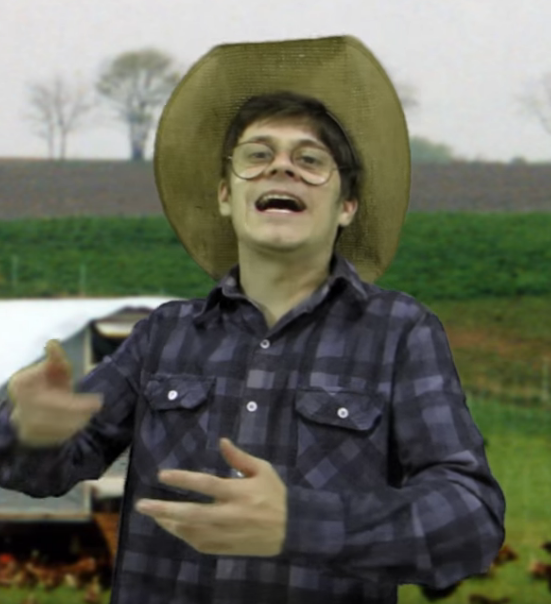

Sobre Tio Sérgio:
Tio Sérgio é um proprietário de uma fazenda e um dos personagens principais da série de Matheus Canella ,com diversas aparições, na fazenda de Tio Sérgio, um de seus animais preferidos da galera é o Galo Tuberculose que vive piscando freneticamente o seu olho,para se comunicar,faz barulhos estranhos que ninguém nunca conseguiu entender.
E indo até o estábulo do Tio Sérgio, encontramos seu sobrinho bicha que gosta de levar aquela montada do cavalo, além disso,há a clássica plantação de maconha que Tio Sérgio pensa ser cheiro verde mas não é só sua fazenda que ele nós proporciona, ele tem um sotaque de caipira e como revelado no vídeo "DESCOBRINDO MEU NOVO GÊNERO", ele é pansexual, mostrando que seus gostos sexuais são bem esquisitos.